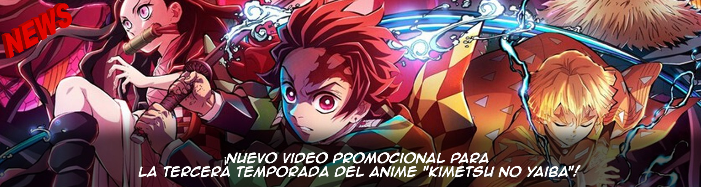

Se fue el verano, y con la llegada de otoño comenzamos una nueva temporada de anime que está llena de sorpresas. ¿Quieren conocer los estrenos, secuelas y películas que vienen para cerrar el año por todo lo alto? ¡Pues empecemos! Iremos actualizando fechas, series, películas y más información a medida de que se acerque la fecha de estreno de la temporada. (Nota: Las temporadas van acorde a Japón, y a partir de Octubre, es otoño en dicho país)
Fecha de estreno: 6 de octubre
Con otra Oleada a solo una semana de distancia, Naofumi Iwatani y su grupo no pueden perder tiempo...
Fecha de estreno: 7 de octubre
Goblin Slayer y su grupo se aventuran hacia las montañas cubiertas de nieve en el norte...

Fecha de estreno: 7 de octubre
Continuación de las aventuras de la familia Forger...
Fecha de estreno: 4 de octubre
Todo ha estado siguiendo el plan previsto, pero la hora de despertar se acerca...
Fecha de estreno: 12 de octubre
Luego de asegurarse un chef y volver a inventar el GPS, la tripulación de Senkuu Ishigami está preparada para surcar los mares...
Fecha de estreno: 29 de septiembre
El rey demonio fue derrotado. Los héroes que lograron esta hazaña vuelven a sus hogares como héroes...
Fecha de estreno: 4 de octubre
Takemicchi Hanagaki no ha logrado salvar a Hinata en el presente, a pesar de sus esfuerzos...
Fecha de estreno: 7 de octubre
Nacido en un nuevo mundo tras una vida estancada, Will despierta junto a un esqueleto, un fantasma y una momia...
Fecha de estreno: 6 de octubre
Un chico callado y con pocas habilidades sociales pierde una apuesta e invita salir a su completa opuesta...
Fecha de estreno: 7 de octubre
La vampira Terakomari Gandesblood (o Komari) despierta como Comandante en el Ejército Imperial Mulnite...
Fecha de estreno: 27 de octubre
Película que adapta la segunda parte del anime original de Digimon...
Fecha de estreno: 17 de noviembre
No hay sinopsis disponible para este título a la fecha...
Fecha de estreno: 23 de noviembre
Película resumen que recopila la temporada dos de Ghost in the Shell SAC_2045...
{kind=link}